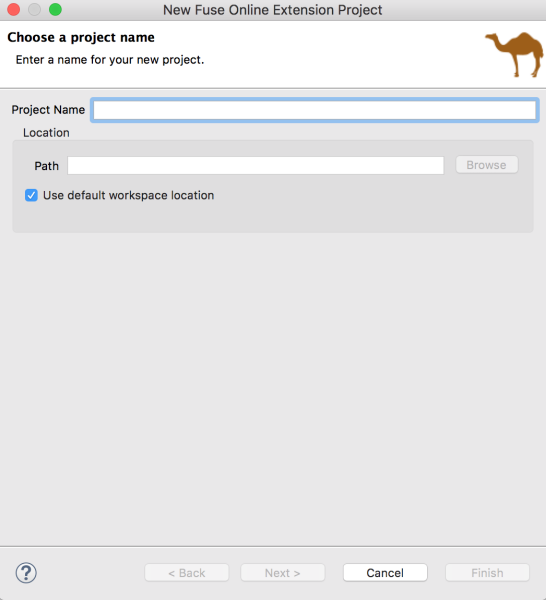
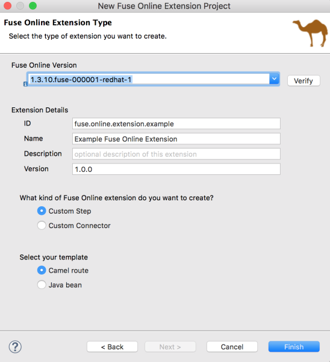
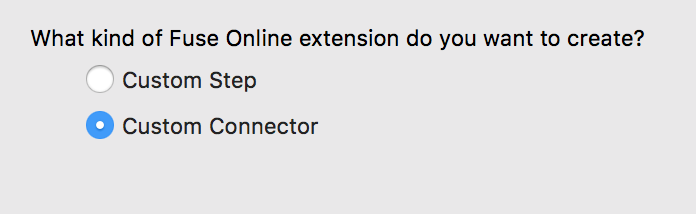

Table of Contents
Fuse Online is a Red Hat Fuse feature that provides a web interface for integrating applications. Without writing code, a business expert can use Fuse Online to connect to applications and optionally operate on data between connections to different applications. If Fuse Online does not provide a feature that an integrator needs, then a developer can create an extension that defines the needed behavior.
You can use Fuse Tooling to develop extensions that provide features for use in Fuse Online. An extension defines:
One or more custom steps that operate on data between connections in an integration
or
- One custom connector
In Fuse Online, a connector represents a specific application to obtain data from or send data to. Each connector is a template for creating a connection to that specific application. For example, the Salesforce connector is the template for creating a connection to Salesforce. If Fuse Online does not provide a connector that the Fuse Online user needs, you can develop an extension that defines a custom connector.
In Fuse Online, a data operation that happens between connections in an integration is referred to as a step. Fuse Online provides steps for operations such as filtering and mapping data. To operate on data between connections in ways that are not provided by Fuse Online built-in steps, you can develop a Fuse Online extension that defines one or more custom steps.
![[Note]](imagesdb/note.png) | Note |
|---|---|
You might prefer to develop an extension in the IDE of your choice. Whether you use Fuse Tooling or another IDE is entirely a matter of personal preference. Information about developing an extension in any IDE is in Integrating Applications with Fuse Online. |
Here is an overview of the tasks for developing a Fuse Online extension:
- In Red Hat CodeReady Studio, create a Fuse Online extension project and select Custom Connector or Custom Step as the extension type.
Depending on the extension type, write the code for the extension:
- For a Custom Connector: Define the base Camel component, the connector icon, global connector properties, and the connector actions.
- For a Custom Step: Add routes, define actions, and specify any dependencies.
- Build a
.jarfile. - Provide the
.jarfile to the Fuse Online user.
The Fuse Online user uploads the .jar file to Fuse Online, which makes the custom connector or custom step(s) available for use. For information about Fuse Online and how to create integrations, see Integrating Applications with Fuse Online.
Before you begin, you need the following information and knowledge:
- A description of the required functionality for the Fuse Online custom connector or step (from the Fuse Online user).
- The Fuse Online version number for the extension.
- For a custom connector, an icon image file in PNG or SVG format. Fuse Online uses this icon when it displays the flow of an integration. If you do not provide an icon, then Fuse Online generates one when the .jar that contains the extension is uploaded.
You should be familiar with:
- Fuse Online
- Spring Boot XML or Java
- Apache Camel routes (if you want to create a route-based step extension)
- JSON
- Maven
Table of Contents
In Fuse Online, a custom connector consists of one or more connection configuration parameters, one or more connection actions, and optional configuration parameters for each action.
Here is an overview of the tasks for developing a custom connector:
- In Red Hat CodeReady Studio, create a Fuse Online extension project and select Custom Connector as the extension type.
- Write the code for the extension. Define the base Camel component, the connector icon, global connector properties, and the connector actions.
A Fuse Tooling Fuse Online extension project provides a starting point for a custom connector.
To create a Fuse Tooling Fuse Online extension project, follow these steps:
In Red Hat CodeReady Studio, select New → Project → Red Hat Fuse → Fuse Online Extension Project.
The New Fuse Online Extension Project wizard opens.
Enter the name and location for the project, then click Next.
- Select the Fuse Online version.
Specify the following extension details:
- ID — A value that you define and that is unique in the Fuse Online environment. This value will be visible in Fuse Online when the Fuse Online user imports the extension
.jarfile. - Name — The name of the extension. This value will be visible in Fuse Online as the extension name. In Fuse Online, on the Customizations → Extensions tab, the user can see a list of the names and descriptions of extensions that have been uploaded to Fuse Online.
- Description — An optional description of the extension content.
- Version — The version of the extension. For example, if this is the initial version, you could type
1.0. If you are updating a version, you could type1.1or2.0.
- ID — A value that you define and that is unique in the Fuse Online environment. This value will be visible in Fuse Online when the Fuse Online user imports the extension
Select Custom Connector for the kind of Fuse Online extension that you want to create.
- Click Finish.
The new project appears in the Red Hat CodeReady Studio Project Explorer view. It includes the following files for a custom connector extension:
In the
src/main/resources/META-INF/syndesisfolder:A descriptor file:
syndesis-extension-definition.jsonThis is the file that you edit to: * Add top-level global properties, connector actions, and action properties. * Change the Extension Id, Name, Version, or Description values.
A default icon image file:
icon.pngYou can optionally replace this file with your own icon image (PNG or SVG) file.
A Maven Project Object Model file:
pom.xmlThis file contains information about the project and configuration details used by Maven to build the project, including default extension dependencies. You edit this file to add custom dependencies. The scope for any dependency that Red Hat ships is provided, for example:
<dependency> <groupId>io.syndesis.extension</groupId> <artifactId>extension-api</artifactId> <scope>provided</scope> </dependency> <dependency> <groupId>org.apache.camel</groupId> <artifactId>camel-core</artifactId> <scope>provided</scope> </dependency> <dependency> <groupId>org.springframework.boot</groupId> <artifactId>spring-boot-starter</artifactId> <scope>provided</scope> </dependency>
After you create the Fuse Online extension project, you write the code that defines the custom connector elements based on the description of the required functionality provided to you by the Fuse Online user. The Table 2, “Custom connector elements” table shows how the elements of the custom connector that you create in Fuse Tooling correspond to elements in Fuse Online.
Table 2. Custom connector elements
| Fuse Tooling element | Fuse Online element | Description |
|---|---|---|
Global (top-level) property | Connection configuration parameter | When a Fuse Online user creates a connection from this connector, the user specifies a value for this property as part of the configuration of the connection. |
Action | Connection action | In Fuse Online, for a connection created from this connector, a Fuse Online user selects one of these actions. |
Property defined in an action | An action configuration parameter | When a Fuse Online user configures the action that the connection performs, the Fuse Online user specifies a value for this property as part of the configuration of the action. |
To write the code that implements a custom connector for Fuse Online:
Open the syndesis-extension-definition.json file in the Editor view and write the code that defines the global properties, the actions that the custom connector can perform, and each action’s properties.
Each global property corresponds to a connection configuration parameter in Fuse Online. Each action property corresponds to a Fuse Online connection action configuration parameter. In Fuse Online, when the user selects a custom connector, Fuse Online prompts for values for each connection configuration parameter. A custom connector can be for an application that uses the OAuth protocol. In this case, be sure to specify a global property for the OAuth client ID and another global property for the OAuth client secret. The Fuse Online user will need to specify values for these parameters for a connection created from this connector to work.
Each connector action declares a base Camel component scheme.
The example provided by the New Fuse Online Extension Project wizard uses the
telegramCamel component scheme:{ "schemaVersion" : "v1", "name" : "Example Fuse Online Extension", "extensionId" : "fuse.online.extension.example", "version" : "1.0.0", "actions" : [ { "id" : "io.syndesis:telegram-chat-from-action", "name" : "Chat Messages", "description" : "Receive all messages sent to the chat bot", "descriptor" : { "componentScheme" : "telegram", "inputDataShape" : { "kind" : "none" }, "outputDataShape" : { "kind" : "java", "type" : "org.apache.camel.component.telegram.model.IncomingMessage" }, "configuredProperties" : { "type" : "bots" } }, "actionType" : "connector", "pattern" : "From" }, { "id" : "io.syndesis:telegram-chat-to-action", "name" : "Send a chat Messages", "description" : "Send messages to the chat (through the bot).", "descriptor" : { "componentScheme" : "telegram", "inputDataShape" : { "kind" : "java", "type" : "java.lang.String" }, "outputDataShape" : { "kind" : "none" }, "propertyDefinitionSteps" : [ { "description" : "Chat id", "name" : "chatId", "properties" : { "chatId" : { "kind" : "parameter", "displayName" : "Chat Id", "type" : "string", "javaType" : "String", "description" : "The telegram's Chat Id, if not set will use CamelTelegramChatId from the incoming exchange." } } } ], "configuredProperties" : { "type" : "bots" } }, "actionType" : "connector", "pattern" : "To" } ], "properties" : { "authorizationToken" : { "kind" : "property", "displayName" : "Authorization Token", "group" : "security", "label" : "security", "required" : true, "type" : "string", "javaType" : "java.lang.String", "secret" : true, "description" : "Telegram Bot Authorization Token" } } }If the custom connector requires additional dependencies, add them to the project’s
pom.xmlfile. The default scope for dependencies is runtime. If you add a dependency that Red Hat ships, define its scope as provided, for example:<dependencies> <dependency> <groupId>org.apache.camel</groupId> <artifactId>camel-telegram</artifactId> <scope>provided</scope> </dependency> </dependencies>
When you finish writing the code for the custom connector, build the .jar file as described in Building the Fuse Online extension JAR file.
Table of Contents
After you create the Fuse Online extension project, you write the code that defines the custom steps based on the description of the required functionality provided to you by the Fuse Online user. Within a single extension, you can define more than one custom step and you can define each custom step with Camel routes or with Java beans.
To create a Fuse Tooling Fuse Online extension project, follow these steps:
In Red Hat CodeReady Studio, select New → Project → Red Hat Fuse → Fuse Online Extension Project.
The New Fuse Online Extension Project wizard opens.
Enter the name and location for the project, then click Next.
- Select the Fuse Online version.
Specify the following extension details:
- ID — A value that you define and that is unique in the Fuse Online environment. This value will be visible in Fuse Online when the Fuse Online user imports the extension
.jarfile. - Name — The name of the extension. This value will be visible in Fuse Online as the extension name. In Fuse Online, on the Customizations → Extensions tab, the user can see a list of the names and descriptions of extensions that have been uploaded to Fuse Online.
- Description — An optional description of the extension content.
- Version — The version of the extension. For example, if this is the initial version, you could type
1.0. If you are updating a version, you could type1.1or2.0.
- ID — A value that you define and that is unique in the Fuse Online environment. This value will be visible in Fuse Online when the Fuse Online user imports the extension
- Select Custom Step for the kind of Fuse Online extension that you want to create.
Select the template for the custom step:

- Camel route — Provides a sample Camel route.
Java bean — Provides a sample Java bean.
Note The template that you select provides a starting point for your project. If you want to create one or more custom steps based on Camel routes and one or more other custom steps based on Java beans within the same extension, start with one of the templates and then add the needed file and dependencies for the other type of custom step.
- Click Finish.
The new project appears in the Red Hat CodeReady Studio Project Explorer view. It includes the following files depending on the template that you selected for the custom step:
In the
src/main/resources/META-INF/syndesisfolder:A descriptor file:
syndesis-extension-definition.jsonThis is the file that you edit to: * Add one or more actions. An action in the `.json `file becomes a custom step in Fuse Online. In an action element, a property in the `.json `file becomes a step configuration parameter in Fuse Online. * Change the Extension Id, Name, Version, or Description values.
For a Camel route template, a Camel context file:
extensions/log-body-action.xmlThis file contains a sample route with a log component. You customize the Camel routes in this file.
For a Java bean template, a Java file:
extensions/extension.javaThis file contains a sample POJO-based logging extension.
A Maven Project Object Model file:
pom.xmlThis file contains information about the project and configuration details used by Maven to build the project, including default extension dependencies. You edit this file to add custom dependencies. The scope for any dependency that Red Hat ships is provided, for example:
<dependency> <groupId>io.syndesis.extension</groupId> <artifactId>extension-api</artifactId> <scope>provided</scope> </dependency> <dependency> <groupId>org.apache.camel</groupId> <artifactId>camel-core</artifactId> <scope>provided</scope> </dependency> <dependency> <groupId>org.springframework.boot</groupId> <artifactId>spring-boot-starter</artifactId> <scope>provided</scope> </dependency>
After you create the Fuse Online extension project, you write the code that defines the custom step(s)based on the description of the required functionality provided to you by the Fuse Online user.
Table 3, “Custom step elements” shows how the elements of the custom step that you create in Fuse Tooling correspond to elements in Fuse Online.
Table 3. Custom step elements
| Fuse Tooling element | Fuse Online element | Description |
|---|---|---|
Action | Custom Step | In Fuse Online, after the user imports the step extension, the custom step(s) appear(s) on the Choose a step page. |
Property defined in an action | A custom step configuration parameter | In Fuse Online, when the user selects a custom step, Fuse Online prompts for values for configuration parameters. |
To write the code that implements a custom step for Fuse Online:
For a Camel route-based step, in the
extension.xmlfile, create routes that address the purpose of the extension. The entrypoint of each route must match the entrypoint that you define in thesyndesis-extension-definition.jsonfile, as described in Step 2.For a Java bean-based step, edit the
javafile.In the
syndesis-extension-definition.jsonfile, write the code that defines the actions and their properties. You need a new action for each entrypoint.Each action that you create corresponds to a custom step in Fuse Online. You can use different types of code for each action. That is, you can use a Camel route for one action and a Java bean for another action.
Each property corresponds to a Fuse Online step configuration parameter. In Fuse Online, when the user selects a custom step, Fuse Online prompts for values for configuration parameters. For example, a custom log step might have a level parameter that indicates how much information to send to the log.
Here is the template for the
.jsonfile that contains the extension metadata, including properties that will be filled in by the user in Fuse Online after uploading the extension and adding its custom step to an integration:{ "actions": [ { "actionType": "extension", "id": "${actionId}", "name": "Action Name", "description": "Action Description", "tags": [ "xml" ], "descriptor": { "kind": "ENDPOINT|BEAN|STEP", "entrypoint": "direct:${actionId}", "inputDataShape": { "kind": "any" }, "outputDataShape": { "kind": "any" }, "propertyDefinitionSteps": [] } } ], "tags": [ "feature", "experimental" ] }Note The tags are ignored in this release. They are reserved for future use.
- To edit the extension dependencies, open the `pom.xml `file in the editor. If you add a dependency, you must define its scope.
When you finish writing the code for the custom step(s), build the .jar file as described in Building the Fuse Online extension JAR file.
To build the .jar file for the extension:
- In the Project Explorer view, right-click the project.
- From the context menu, select Run As → Maven clean verify.
- In the Console view, you can monitor the progress of the build.
- When the build is complete, refresh the target folder in the Project Explorer view (select the project and then press F5).
In the Project Explorer view, open the target folder to see the generated
.jarfile:The name of the .jar file follows Maven defaults:
${artifactId}-${version}.jarFor example:
custom:step-camel-1.0.0.jarThis
.jarfile defines the extension, its required dependencies, and its metadata: Extension Id, Name, Version, Tags, and Description. For example:{ "schemaVersion" : "v1", "name" : "Example Fuse Online Extension", "description" : "Logs a message body with a prefix", "extensionId" : "fuse.online.extension.example", "version" : "1.0.0", "actions" : [ { "id" : "Log-body", "name" : "Log Body", "description" : "A simple xml Body Log with a prefix", "descriptor" : { "kind" : "ENDPOINT", "entrypoint" : "direct:log-xml", "resource" : "classpath:META-INF/syndesis/extensions/log-body-action.xml", "inputDataShape" : { "kind" : "any" }, "outputDataShape" : { "kind" : "any" }, "propertyDefinitionSteps" : [ { "description" : "Define your Log message", "name" : "Log Body", "properties" : { "prefix" : { "componentProperty" : false, "deprecated" : false, "description" : "The Log body prefix message", "displayName" : "Log Prefix", "javaType" : "String", "kind" : "parameter", "required" : false, "secret" : false, "type" : "string" } } } ] }, "tags" : [ "xml" ], "actionType" : "step" } ], "dependencies" : [ { "type" : "MAVEN", "id" : "io.syndesis.extension:extension-api:jar:1.3.0.fuse-000014" } ], "extensionType" : "Steps" }
Provide the following to the Fuse Online user:
- The
.jarfile - A document that describes the extension. For a step extension, include information about data shapes that each action in the step extension requires as input or provides as output (for data mapping).
In Fuse Online, the user uploads the .jar file as described in Integrating Applications with Fuse Online.